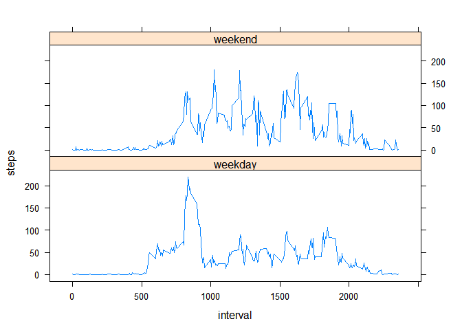

Reproducible Research: Peer Assessment 1
Eduardo Garcia
Loading and preprocessing the data
unzip(zipfile = "activity.zip")
data <- read.csv("activity.csv", header=TRUE)What is mean total number of steps taken per day?
For this part of the assignment we can ignore the missing values in the dataset.
clean_data <- data[which(data$steps != "NA"), ]First we calculate the total number of steps taken per day and then we represent the result in a histogram. There are three main differences between histograms and barplots:
- Histograms are used to show distributions of variables while bar charts are used to compare variables.
- Histograms plot binned quantitative data while bar charts plot categorical data.
- Bars can be reordered in bar charts but not in histograms.
library(plyr)
total_steps_by_day <- ddply(clean_data, .(date), summarise, steps = sum(steps))
hist(total_steps_by_day$steps,
main = "Total number of steps taken per each day. NA ignored",
xlab = "Total number of steps taken per each day",
ylab = "Frequency")
Finally we calculate the mean and median of the total number of steps taken per day.
mean(total_steps_by_day$steps)## [1] 10766.19median(total_steps_by_day$steps)## [1] 10765What is the average daily activity pattern?
This time series plot represents the 5-minute interval (x-axis) and the average number of steps taken, averaged across all days (y-axis):
average_steps_by_interval <-
ddply(clean_data, .(interval), summarise, steps = mean(steps))
plot(average_steps_by_interval$interval,
average_steps_by_interval$steps,
type = "l",
main = "Average daily activity pattern",
xlab="5-minute interval",
ylab="Average number of steps")
The 5-minute interval that contains the maximum number of steps on average across all the days is:
average_steps_by_interval[
average_steps_by_interval$steps == max(average_steps_by_interval$steps),]## interval steps
## 104 835 206.1698Imputing missing values
The presence of missing days may introduce bias into some calculations or summaries of the data.
The total number of missing values in the dataset (i.e. the total number of rows with NAs) is calculated as follows:
sum(is.na(data$steps))## [1] 2304In order to fill all of the missing values in the dataset, we use the mean for that 5-minute interval. As a result we have a new dataset that is equal to the original dataset but with the missing data filled in.
colnames(average_steps_by_interval)[2] <- "intervalAverage"
filled_data <- arrange(join(data, average_steps_by_interval), interval)## Joining by: intervalfilled_data$steps[is.na(filled_data$steps)] <-
filled_data$intervalAverage[is.na(filled_data$steps)]In the following block we plot the histogram of the total number of steps taken each day:
filled_total_steps_by_day <-
ddply(filled_data, .(date), summarise, steps = sum(steps))
hist(filled_total_steps_by_day$steps,
main = "Total number of steps taken per each day. NA filled",
xlab = "Total number of steps taken per each day",
ylab = "Frequency")
Finally we calculate the mean and median of the total number of steps taken per day with the filled data.
mean(filled_total_steps_by_day$steps)## [1] 10766.19median(filled_total_steps_by_day$steps)## [1] 10766.19As expected, the mean and the median values are higher after inputing the missing values than when we ignored them. When the NAvalues were ignored, we assumed 0 steps for that value, while with the inputing strategy they were filled with the average of that 5-minutes interval, which could be greater than 0 in may cases.
Are there differences in activity patterns between weekdays and weekends?
First with the weekdays() function we obtain the weekdays from the dataset and then we add a factor variable to the dataset with the type of day (“weekday or weekend”):
weekdays <- weekdays(as.Date(filled_data$date))
weekdays_data <- transform(filled_data, day = weekdays)
# Adding a factor variable with "weekend" or "weekday" value, accordingly
weekdays_data$day_type <-
ifelse(weekdays_data$day %in% c("domingo", "sabado"), "weekend", "weekday")
average_by_interval_day_type <-
ddply(weekdays_data,
.(interval, day_type),
summarise, steps = mean(steps))Finally to visualize the differences in activity patterns between weekdays and weekends we create a panel plot containing a time series plot of the 5-minute interval (x-axis) and the average number of steps taken, averaged across all weekday days or weekend days (y-axis).
library(lattice)
xyplot(steps ~ interval | day_type,
data = average_by_interval_day_type,
layout = c(1, 2), type="l")